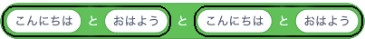
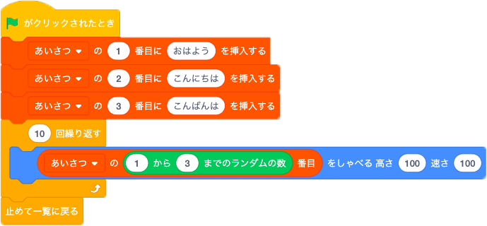
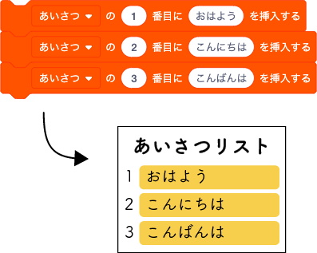

サイコロの目のように、次は何が出てくるか分からない規則性のない数字のことを乱数(らんすう)と言います。
乱数を使えば、ロボットに単純な繰り返し動作でなく、人間のような複雑な動作をさせることができます。
サイコロを振って出た目の数をしゃべらせよう
「サイコロ振って」と聞き取ったら、サイコロを振って出た目の数を答えるプログラムを作ります。
乱数を作るにはランダムブロックを使います。
このブロックは緑の「演算」の中にあります。
1から10までの数をランダムに生成します。
1と10は他の数字やブロックに変えることができます。
ここでは2日目「2.音センサーで会話しよう」で使った文字列を結合するブロックも使います。
それでは次のプログラムを作ってみよう。

「サイコロ振って」と聞き取ったら、２つのサイコロを振って出た目の数を答えるプログラムを作ろう。
たとえば、1と6が出たら、「1と6が出ました」と答えるプログラムを考えよう。
たとえば、1と6が出たら、「1と6が出ました」と答えるプログラムを考えよう。

ひらがなの「と」が入っているか確認しよう。
プログラム中で使った文字列を結合させるブロックは、次のようにいくつも組み合わせることもできます。

プログラム中で使った文字列を結合させるブロックは、次のようにいくつも組み合わせることもできます。
Pepperの幸運度占い
幸運度を5段階で占うプログラムをつくります。
次のプログラムを作ってみよう。
Pepperのセリフ
あなたの今日の幸運度は5段階中の
「1から5までのランダムな数」です！
それでは良い1日をお過ごしください
3つの挨拶をランダムに繰り返そう
「おはよう」「こんにちは」「こんばんは」をランダムにしゃべるプログラムを作ります。
今回はオレンジ色の「変数」のリストの機能を使います。
リストとは複数のデータを番号をつけて整理しておける入れ物です。
次の画像と同じように「あいさつ」リストを作ってみよう。
それでは次のプログラムを作ってみよう。
リストのブロックを利用することで、「あいさつ」のリストにデータを挿入することができます。
